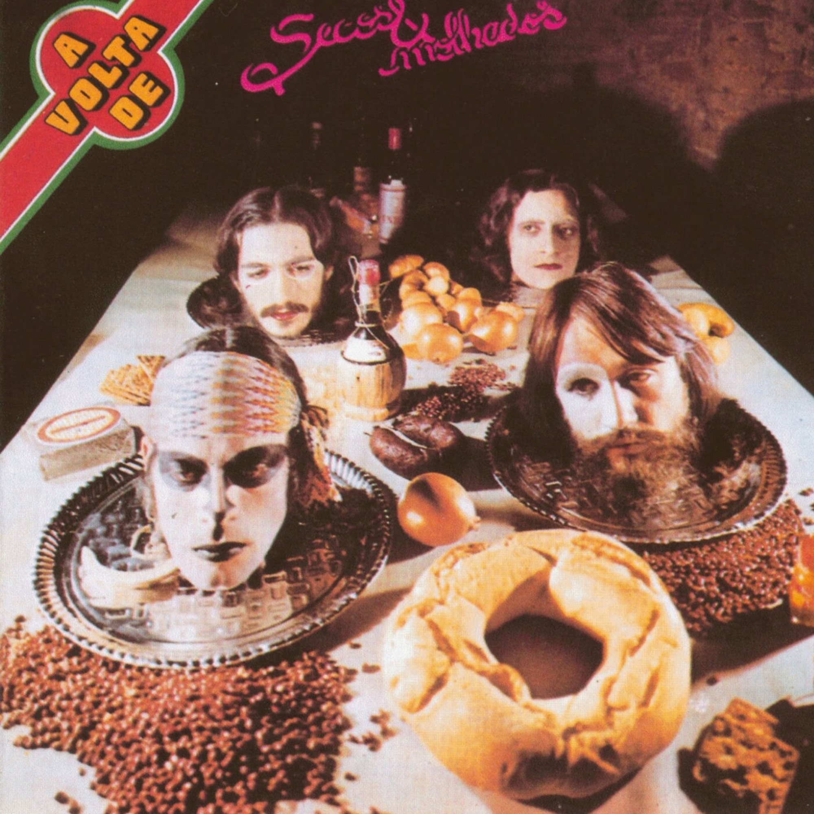

Secos & Molhados (1973)
Secos & Molhados
00:23
I swore lies and go on alone
Jurei mentiras e sigo sozinho
00:30
I own up to my sins
Assumo os pecados
00:37
The northern winds don't move windmills
Os ventos do norte não movem moinhos
00:44
And only a moan is left for me
E o que me resta é só um gemido
00:51
My life, my dead, my crooked ways
Minha vida, meus mortos, meus caminhos tortos
00:58
My Latin blood
Meu sangue latino
01:05
My captive soul
Minh'alma cativa
01:13
I broke treaties, betrayed rites
Rompi tratados, traí os ritos
01:20
I broke the spear, threw it out to space
Quebrei a lança, lancei no espaço
01:27
A yell, a confession
Um grito, um desabafo
01:35
And what matters to me is not being beaten
E o que me importa é não estar vencido
01:42
My life, my dead, my crooked ways
Minha vida, meus mortos, meus caminhos tortos
01:49
My Latin blood
Meu sangue latino
01:56
My captive soul
Minh'alma cativa
00:05
The black cat crossed the road
O gato preto cruzou a estrada
00:10
Passed under the stairs
Passou por debaixo da escada
00:15
And on the blue background of the forest night
E lá no fundo azul, na noite da floresta
00:20
The moon lit the dance, the circle, the party
A lua iluminou a dança, a roda, a festa
00:24
Turn, turn, turn
Vira, vira, vira
00:25
Turn, turn, turn into a man, turn, turn
Vira, vira, vira homem, vira, vira
00:28
Turn, turn into a werewolf
Vira, vira, lobisomen
00:29
Turn, turn, turn
Vira, vira, vira
00:31
Turn, turn, turn into a man, turn, turn
Vira, vira, vira homem, vira, vira
00:34
Owls and fireflies dance
Bailam corujas e pirilampos
00:40
Between the sacis and fairies
Entre os sacis e as fadas
00:44
And on the blue background of the forest night
E lá no fundo azul, na noite da floresta
00:49
The moon lit the dance, the circle, the party
A lua iluminou a dança, a roda, a festa
00:53
Turn, turn, turn
Vira, vira, vira
00:54
Turn, turn, turn into a man, turn, turn
Vira, vira, vira homem, vira, vira
00:57
Turn, turn into a werewolf
Vira, vira, lobisomen
00:58
Turn, turn, turn
Vira, vira, vira
01:00
Turn, turn, turn into a man, turn, turn
Vira, vira, vira homem, vira, vira
(instrumental)
01:33
Owls and fireflies dance
Bailam corujas e pirilampos
01:39
Between the sacis and fairies
Entre os sacis e as fadas
01:43
And on the blue background of the forest night
E lá no fundo azul, na noite da floresta
01:49
The moon lit the dance, the circle, the party
A lua iluminou a dança, a roda, a festa
01:53
Turn, turn, turn
Vira, vira, vira
01:54
Turn, turn, turn into a man, turn, turn
Vira, vira, vira homem, vira, vira
01:57
Turn, turn into a werewolf
Vira, vira, lobisomen
01:58
Turn, turn, turn
Vira, vira, vira
02:00
Turn, turn, turn into a man, turn, turn
Vira, vira, vira homem, vira, vira
00:23
I want the love
Eu quero o amor
00:28
Of the cactus flower
Da flor de cactus
00:30
She didn't want it
Ela não quis
00:34
I gave you the flower
Eu dei-lhe a flor
00:37
Of my life
De minha vida
00:40
I live agitated
Vivo agitado
00:43
Now, I don't even know if I know
Eu já não sei se sei
00:47
Everything or almost everything
De tudo ou quase tudo
00:52
I just know about me
Eu só sei de mim
00:55
About us
De nós
00:56
About the whole world
De todo o mundo
01:15
I live stuck
Eu vivo preso
01:18
To your password
À sua senha
01:21
I'm tricked
Sou enganado
01:24
I release my breath
Eu solto o ar
01:28
At the end of the day
No fim do dia
01:30
I lost my life
Perdi a vida
01:34
Now, I don't even know if I know
Eu já não sei se sei
01:38
Nothing or almost nothing
De nada ou quase nada
01:41
I just know about me
Eu só sei de mim
01:45
I just know about me
Só sei de mim
01:47
I just know about me
Só sei de mim
02:06
Our daily boss
Patrão nosso
02:09
Of each day
De cada dia
02:11
Day after day
Dia após dia
02:15
Our daily boss
Patrão nosso
02:18
Of each day
De cada dia
02:20
Day after day
Dia após dia
02:24
Our daily boss
O patrão nosso
02:26
Of each day
De cada dia
02:28
Day after day
Dia após dia
00:20
Light, like a light plume
Leve, como leve pluma
00:23
Very light, lightly lands
Muito leve, leve pousa
00:27
Very light, lightly lands
Muito leve, leve pousa
00:40
On the soft and simple thing
Na simples e suave coisa
00:44
Not soft at all
Suave, coisa nenhuma
00:47
Not soft at all
Suave, coisa nenhuma
00:59
Shadow, silence or foam
Sombra, silêncio ou espuma
01:03
Blue cloud that chills over
Nuvem azul que arrefece
01:10
Soft and simple thing
Simples e suave coisa
01:15
Not soft at all
Suave, coisa nenhuma
01:17
That ripens in me
Que em mim, amadurece
01:32
Light, like a light plume
Leve, como leve pluma
01:35
Very light, lightly lands
Muito leve, leve pousa
01:39
Very light, lightly lands
Muito leve, leve pousa
(instrumental)
02:52
Those that have the conscience to be brave
Quem tem consciência para ter coragem
03:00
Those that have the strength to know they exist
Quem tem a força de saber que existe
03:09
And in the center of their own gear
E no centro da própria engrenagem
03:16
Invent the spring of resistance
Inventa contra a mola que resiste
03:24
Those that don't waver even when defeated
Quem não vacila mesmo derrotado
03:32
Those that don't despair even when lost
Quem já perdido nunca desespera
03:40
And surrounded by storm, chopped into pieces
E envolto em tempestade, decepado
03:48
Hold springtime between their teeth
Entre os dentes segura a primavera
"Assim assado," or "Assim ou assado," meaning "like this or baked," is an idiomatic expression meaning something like "one way or another," or "this way or the hard way"
00:43
It's two in the morning of a day like this
São duas horas da madrugada de um dia assim
00:48
An old man walks in an old suit, like this, like this
Um velho anda de terno velho assim assim
00:52
When a beautiful guard appears
Quando aparece o guarda belo
00:58
When a beautiful guard appears
Quando aparece o guarda belo
01:05
He's placed into scene doing something like this
É posto em cena fazendo cena um treco assim
01:10
Very pointy, flat nose, like this, like this
Bem apontado nariz chato assim assim
01:16
When the old man's colors appear
Quando aparece a cor do velho
01:21
When the old man's colors appear
Quando aparece a cor do velho
01:47
But beautiful guards don't believe in colors like this
Mas guarda belo não acredita na cor assim
01:51
He decides on the old suit, like this, like this
Ele decide no terno velho assim assim
01:57
Because he wants to see the old man baked
Porque ele quer o velho assado
02:02
Because he wants to see the old man baked
Porque ele quer o velho assado
02:08
But even then, the old man dies, like this, like this
Mas mesmo assim o velho morre assim assim
02:14
And the beautiful guard is the hero on way or another
E o guarda belo é o heroi assim assado
02:19
Because you need to be one way or another
Por que é preciso ser assim assado
02:24
Because you need to be one way or another
Por que é preciso ser assim assado
00:06
Paunchy woman that's expecting a baby
Mulher barriguda que vai ter menino
00:12
What fate will he have?
Qual o destino que ele vai ter?
00:17
What will he be when he grows up?
Que será ele quando crescer?
00:54
Will there still be war?
Haverá guerra ainda?
01:00
I hope not
Tomara que não
01:05
Paunchy woman
Mulher barriguda
01:08
I hope not
Tomara que não
01:43
Will there still be war?
Haverá guerra ainda?
01:49
I hope not
Tomara que não
01:55
Paunchy woman
Mulher barriguda
01:57
I hope not
Tomara que não
00:08
I saw El Rey walk on all fours
Eu vi El Rey andar de quatro
00:11
Four different faces
De quatro caras diferentes
00:16
And four hundred jail cells
E quatrocentas celas
00:18
Full of people
Cheias de gente
00:23
I saw El Rey walk on all fours
Eu vi El Rey andar de quatro
00:27
Four different shining paws
De quatro patas reluzentes
00:31
And four hundred deaths
E quatrocentas mortes
00:39
I saw El Rey walk on all fours
Eu vi El Rey andar de quatro
00:42
Four attractive poses
De quatro poses atraentes
00:46
And four hundred candles
E quatrocentas velas
00:48
Like gnomes
Feitas duendes
00:24
Think of the children, mute, telepathic
Pensem nas crianças, mudas, telepáticas
00:34
Think of the girls, blind, inexact
Pensem nas meninas, cegas, inexatas
00:45
Think of the women, altered routes
Pensem nas mulheres, rotas alteradas
00:55
Think of the wounds, like boiling roses
Pensem nas feridas, como rosas cálidas
01:05
But, oh, don't forget about the rose, the rose
Mas, oh, não se esqueçam da rosa, da rosa
01:15
The Hiroshima rose, the hereditary rose
Da rosa de Hiroshima, a rosa hereditária
01:25
The radioactive, stupid, invalid rose
A rosa radioativa, estúpida e inválida
01:35
The rose with cirrhosis, the atomic anti-rose
A rosa com cirrose, a anti-rosa atômica
01:46
No color, no scent, no rose, nothing
Sem cor, sem perfume, sem rosa, sem nada
00:14
May the four, like in a theater play
Que os quatro como num teatro
00:20
Hold back their hands with not gesture
Conservem a mão sem nenhum gesto
00:26
May the hot wine of the heart
Que o vinho quente do coração
00:33
Rise to their thick heads
Lhes suba à cabeça espessa
00:40
May, from the pockets of each of the four
Que do bolso de cada um dos quatro
00:45
Like in a theater play, fly doves
Como num teatro, voem pombas
00:49
White doves and may dawn break
Pombas brancas e amanheça
01:33
May the four, like in a theater play
Que os quatro como num teatro
01:38
Hold back their hands with not a gesture
Conservem a mão sem nenhum gesto
01:44
May the hot wine of the heart
Que o vinho quente do coração
01:51
Rise to their thick heads
Lhes suba à cabeça espessa
00:08
Bão balalão
Bão balalão
00:11
Captain, sir
Senhor capitão
00:13
Take off this weight
Tirai este peso
00:15
From my heart
Do meu coração
00:23
It's not sadness
Não é de tristeza
00:25
It's not anxiety
Não é de aflição
00:27
It's just hope
É só de esperança
00:29
Captain, sir!
Senhor capitão!
00:40
The light hope
A leve esperança
00:42
The aerial hope
A aérea esperança
00:44
Aerial, why, yes!
Aérea, pois não!
00:49
A heavier weight
Peso mais pesado
00:51
Doesn't exist
Não existe não
00:53
Ah, rid me of it
Ah, livrai-me dele
00:56
Captain, sir!
Senhor capitão!
00:21
On the tense wires
Nos fios tensos
00:30
Of the metal stave
Da pauta de metal
00:37
The swallows yell
As andorinhas gritam
00:43
For lack of a treble clef
Por falta de uma clave de sol
00:02
I don't know how to say things
Eu não sei dizer
00:06
Just for the sake of it
Nada por dizer
00:11
So instead I listen
Então eu escuto
00:18
If you tell me
Se você disser
00:23
All I want to say
Tudo o que quiser
00:27
Then I'll listen
Então eu escuto
00:41
Speak
Fala
00:53
Speak
Fala
00:59
If I don't understand
Se eu não entender
01:03
Then I won't answer
Não vou responder
01:08
So I listen
Então eu escuto
01:15
I'll only speak
Eu só vou falar
01:19
When it's my time to speak
Na hora de falar
01:24
So instead I listen
Então eu escuto
01:37
Speak
Fala
01:49
Speak
Fala
02:32
Speak
Fala
02:43
Speak
Fala